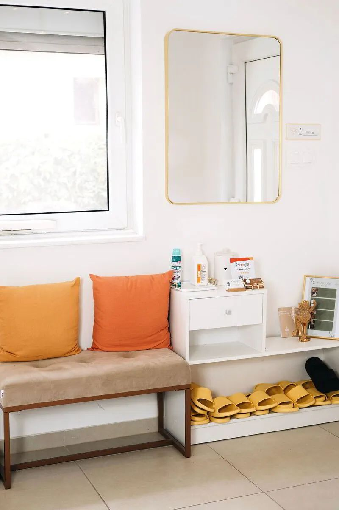
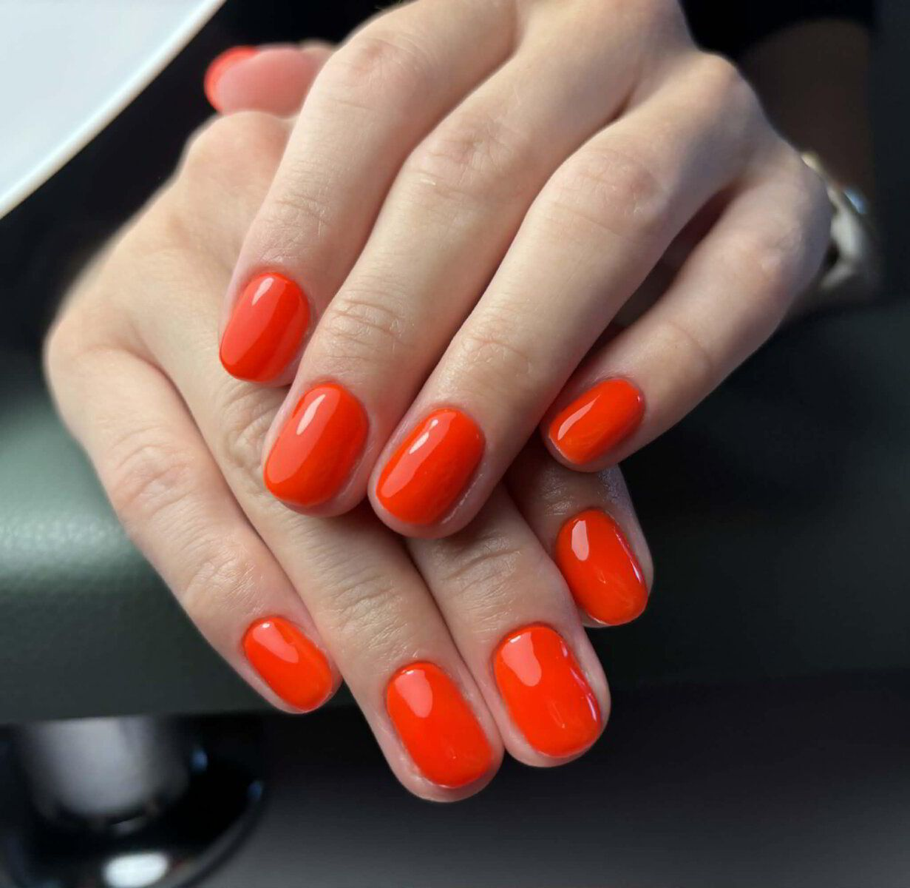
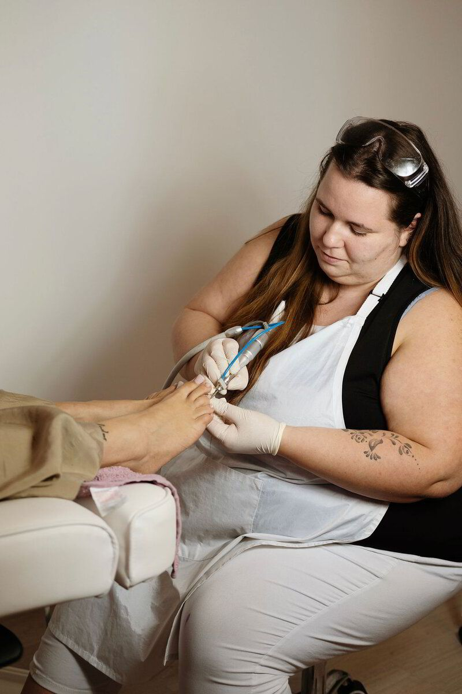
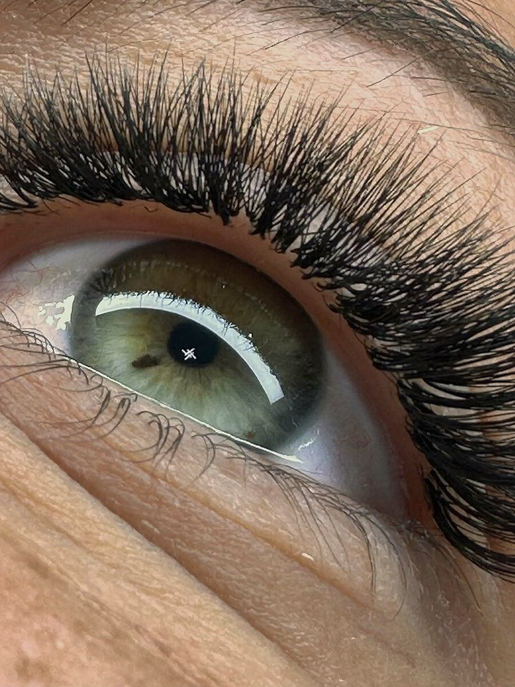
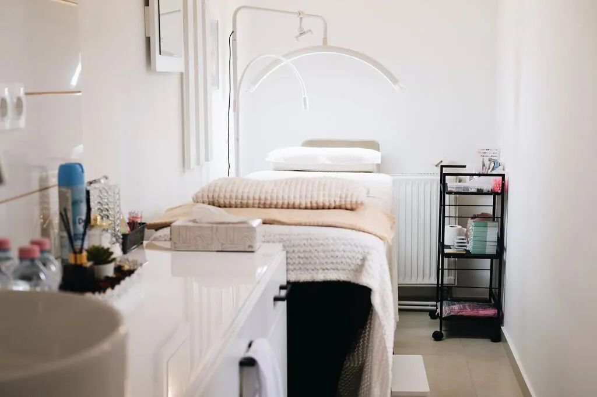
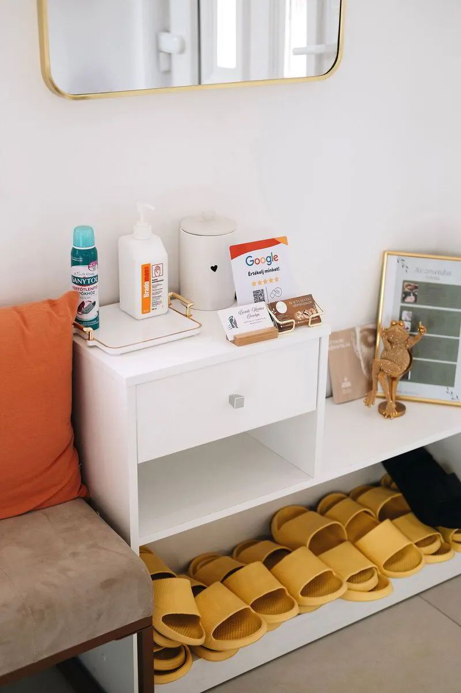
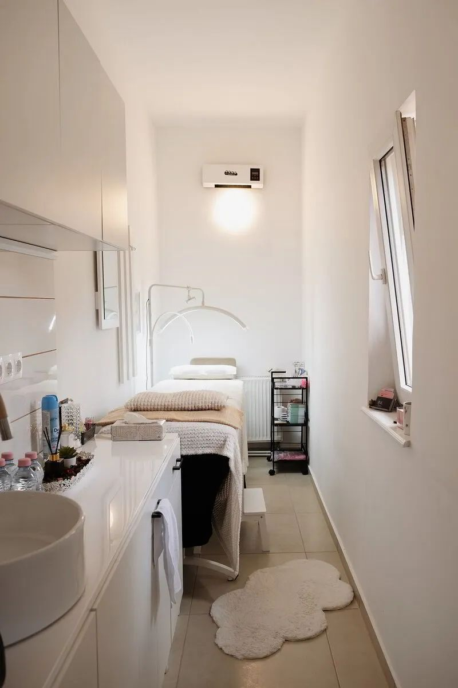
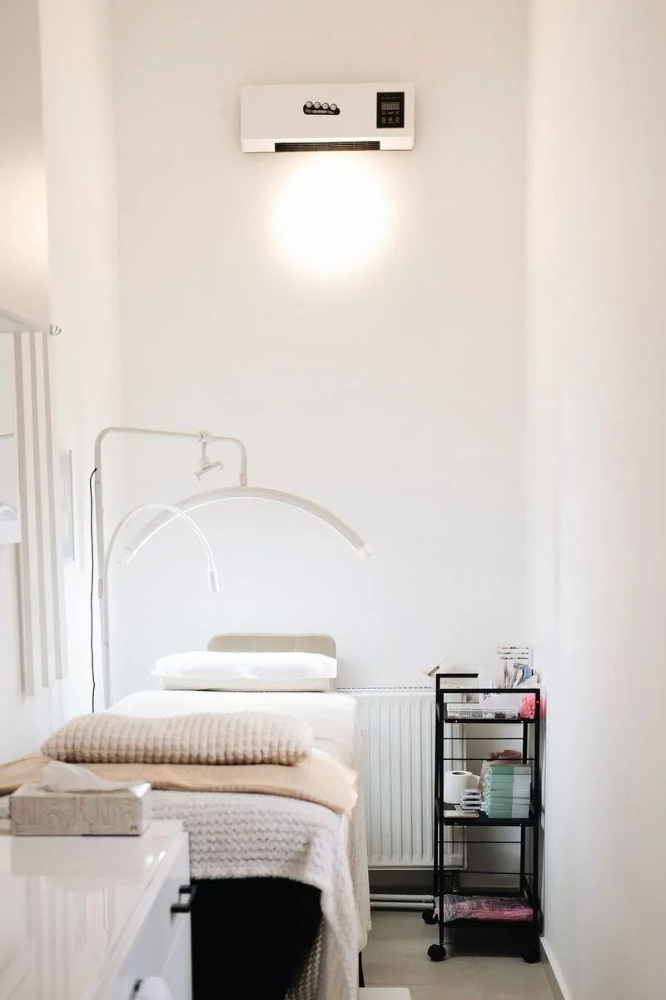

Beauty Kuckó Dunakeszi
Műköröm, pedikűr és lábápolás, szempilla- és szemöldökstyling, masszázs. Négy szakember egy nyugodt, otthonos szalonban.
2120 Dunakeszi, Fő út 134.

Kihez jönnél?
Minden szakemberünk a saját naptárát kezeli, ezért nála közvetlenül tudsz időpontot foglalni.
-

Veres Viktória
Műkörömépítő és kézápoló
Online foglalás a Salonicon
Foglalok Viktóriánál -

Ecsedi-Kovács Orsolya
Pedikűrös, podológus, speciális lábápoló
Foglalás telefonon vagy e-mailben
Hívom Orsolyát -

Pinczi Kamilla
Szempilla- és szemöldökstylist
Foglalás Instagram-üzenetben
Írok Kamillának -

Baracz Eszter
Tulajdonos, masszőr
Foglalás Facebook-üzenetben, ajánlás alapján
Írok Eszternek
Szolgáltatások

Műköröm és manikűr
Géllakk kombinált manikűrrel, műkörömépítés, töltés és díszítések.

Pedikűr és lábápolás
Esztétikai és speciális lábápolás, benőtt köröm, spange, cukorbeteg láb ápolása.

Szempilla és szemöldök
Műszempilla, szempilla lifting, szemöldökformázás, festés és laminálás.

Masszázs
Olajos teljes test-, hát-, fej- és talpmasszázs, erős technikával.
A szalon
Lépj be egy nyugodt, elegáns környezetbe, ahol minden részletet úgy alakítottunk ki, hogy igazán jól érezd magad. A személyes figyelemtől a kellemes hangulatig minden adott ahhoz, hogy kikapcsolódj és feltöltődj.
Prémium alapanyagokkal és a legújabb technikákkal dolgozunk, mindig a te igényeidhez igazodva.
Galéria

Vendégeink mondták
„Tiszta, kellemes környezet! Ajánlom mindenkinek, aki egy kis »én időre« vágyik. A lányok precízek, kedvesek, nagyon segítőkészek, és nem mellesleg nagyon értenek ahhoz, amit csinálnak.”
havasi vivien, Google-értékelés „Szuper szalon, tiszta és csodás környezetben lehet szépülni, minőségi szakemberek kezei között.”
Anna Bodnárné Rigó, Google-értékelés „Igényes környezet, kedves, profi szakemberek!”
Andrea Koller, Google-értékelés
Kapcsolat
- Cím
- 2120 Dunakeszi, Fő út 134.
Útvonaltervezés a Google Térképen - Nyitvatartás
- Előre egyeztetett időpontban, szakemberenként eltérő beosztással.
- Foglalás
- Szakemberenként, a saját elérhetőségükön
